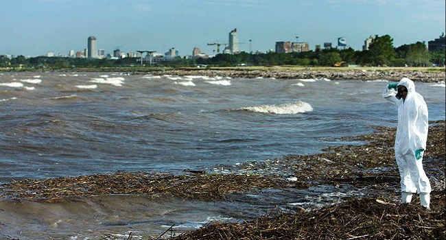
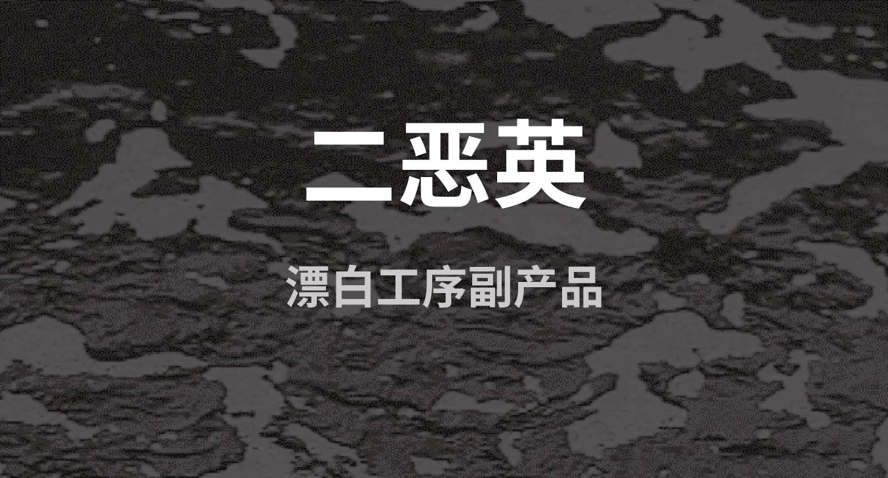

时尚的反噬
服装产业背后的肮脏秘密
“服装垃圾”泛滥成灾
服装产业的边缘性问题
时尚的反噬
时装业污染、浪费与边缘性问题
了解更多
一个小镇的故事
时尚、个性、自由、狂野？
这些符号的生产过程，可能会让我们付出沉重代价。
“牛仔之都”的污染之痛
中国东南部一个闻名遐迩的
“牛仔之乡”——新塘
，有着高度集中的牛仔裤产业。新塘处珠江三角洲，拥有2600多家牛仔制衣及相关企业， 每天生产牛仔系列服装
250万
件，占全国总生产量的
60%
，总出口量的
30%
，牛仔裤远销俄罗斯、美国、欧盟、香港等几十个国家和地区。 占地1000多亩的
新塘牛仔城
,是这里最醒目的地标。
然而，当踏足新塘，才发现这里与真正的“时尚之都”相去甚远。曾经清澈的河道如今流淌着黑色的污水，空气中弥漫着或恶臭、或刺激性的气味。河中再无活鱼，也难以再被饮用、洗衣的灌溉。在
国际环保组织Greenpeace发布的调查报告
中发现，牛仔裤产业为当地带来经济发展和就业机会的同时，也给人们的生活带来了严重的污染困扰。
“夏天天热时，喷剂就弥散在空气里，我们皮肤上长满了红色的疹子。”
——杨明（化名），新塘海洋洗水厂男工
“每天早上四点多水退的时候，屋旁的河就变得很臭，令人想吐。”
——刘先生，居住于坭紫村的四川男工
“又不是不让他赚钱，我的家人还得靠车牛仔衣服为生。但生产的同时也要干净，不要把环境污染。”
——林舟（化名），新塘镇西洲村村民
“这些水是从上游的染厂排出来的,有的时候特别臭，每次颜色还不一样,什么颜色都有。”
——任山(化名)，贵州男工

“小的厂太多了，他们哪里会处理污水，都是私自排到河涌里。假如前几天不下雨的话， 你会发现河水就是蓝黑色的。”
——董耀明（化名），当地人
“这里日日都排，水是黑色的，从管道流出之后散发着一股刺鼻的气味。刮风时，村内四处都是臭味，废水的水泡四处飘散，有时甚至会吹入屋内。这些事情群众都不敢声张，他们有权有势，我们这些普通百姓又能怎样？”
——陈伯，居住于冠龙纺织有限公司旁
服装产业的“毒”污染链
作为工业化的典型城镇，“牛仔之乡”的靓丽光环背后, 是
中国纺织业乃至世界服装产业链带来的污染之痛。
纺织业等工业排放的废水会造成极其严重的水污染，然而，目前的污染防治措施（即依靠污水处理厂和对某些污染物进行限制）并不能有效阻止这一问题,
许多国家与地区的污水处理效果仍然较差。
纺织行业作业传统的高污染行业之一，其带来的污染不仅是巨大 的废水排放量，更重要的是，纺织行业在生产工序中通常会使用很多包括有毒有害物质在内的化学物质。
是一种强有力的内分泌干扰素。
对肝脏造成损害，且是可能的致癌物。

是一种会造成生殖发育障碍，损害免疫系统，干扰荷尔蒙以及具有致癌性的剧毒物质。
危害哺乳动物生殖发展，包括影响睾丸生长。
致癌物质
致癌物质
一种内分泌干扰素，可能会影响生物的荷尔蒙分泌。
造成呼吸系统、神经系统损伤、肝病
造成神经系统损伤、可导致智力下降发育和行为障碍
造成认知障碍、发育迟缓、行为障碍
造成癌症、溃疡及其它胃病
造成肺病、肾病、癌症
纺织业对环境带来的污染不仅是有毒有害物质的沉积。 如今，我们的衣服有
60%
是人造纤维混纺材质，这带来了微纤维污染问题。一篇发布在
《海洋污染公报》(Marine Pollution Bulletin)上的研究
表明，
35%
的海洋微塑料来自服装，主要是由于在洗涤过程中对聚酯、丙烯酸或尼龙服装的损害。一条旧牛仔裤每次洗涤可释放
56000×4100
微纤维
。这些微纤维无声无息地潜入海洋，随着洋流到达世界的任意角落。一篇发布在
《环境科学与技术快报》(Environmental Science and Technology Letters)的研究
发现，在远离人类生活的加拿大北极群岛、劳伦森五大湖区和安大略省南部郊区浅水湖泊的沉积物中含有蓝色牛仔裤纤维。过细的合成纤维在我们每一次洗衣服时随着水流进海洋，危害海洋生物，最终进入食物链，危及人们的身体健康。目前，
在海洋物种和人体血液的内脏中已经发现微塑料颗粒。
时装业的温室气体排放量约占全球的
4%
，相当于法、德、英三国每年温室气体排放量的总和。
——全球时尚议程
在全球供应链下，制造与运送纺织品会消耗大量燃料，加剧气候变化。
时尚的代价，究竟由谁来承担？
走进时装业 了解服装浪费


{kind=link}
{kind=link}
{kind=link}
{kind=link}
{kind=link}
{kind=link}
{kind=link}
{kind=link}
{kind=link}